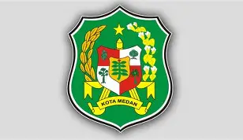

Sejarah Singkat Kota Medan
Sejarah Kota Medan berawal dari sebuah kampung yang didirikan oleh Guru Patimpus di pertemuan Sungai Deli dan Sungai Babura. Hari jadi Kota Medan ditetapkan pada 1 Juli 1590. Selanjutnya pada tahun 1632, Medan dijadikan pusat pemerintahan Kesultanan Deli, sebuah Kerajaan Melayu. Bangsa Eropa mulai menemukan Medan sejak kedatangan John Anderson dari Britania Raya pada tahun 1823. Peradaban di Medan terus berkembang hingga Pemerintah Hindia Belanda memberikan status kotapraja (gemeente) pada 1 April 1909 dan menjadikannya pusat pemerintahan Keresidenan Sumatra Timur. Memasuki abad ke-20, Medan menjadi kota yang penting di luar Pulau Jawa, terutama setelah pemerintah kolonial membuka perusahaan perkebunan secara besar-besaran. Namun sejarah ini dibantah oleh Dr. Bonatua Silalahi, seorang peneliti Paleografi. Dia mengatakan sejara Pendiri dan tanggal berdirinya Kota Medan diputuskan secara pendekatan politik oleh DPRD Kota Medan, Keputusan Politisi tersebut jauh dari pertimbangan ilmiah karena tidak melakukan Uji Sumber Data. Riwayat Hamparan Perak merupakan dokumen yang tak bisa diverifikasi dan validasi terkait Siapa penulisnya dan kapan dibuatnya ditambah lagi Naskah aslinya tak pernah ditemukan. Ini Berbeda dengan Sumber data Buku John Anderson yang menyebutkan daerah Meidan didirikan Radin Inu bergelar Rajah Pulo Brayan tak lama sebelum 16 Januari 1823. [15] Menurut Bappenas, Medan adalah salah satu dari empat pusat pertumbuhan utama di Indonesia, bersama dengan Jakarta, Surabaya, dan Makassar.[16][17] Medan adalah kota multietnis yang penduduknya terdiri dari orang-orang dengan latar belakang budaya dan agama yang berbeda-beda. Selain Melayu dan Batak (Batak Karo) sebagai penghuni awal, Medan didominasi oleh etnis Jawa, Batak, Tionghoa, dan Minangkabau. Mayoritas penduduk Medan bekerja di sektor perdagangan, sehingga banyak ditemukan ruko di berbagai sudut kota. Di samping kantor-kantor pemerintah provinsi, di Medan juga terdapat kantor-kantor konsulat dari berbagai negara seperti Amerika Serikat, India, Jepang, Malaysia, dan Jerman.
Lokasi Kota Medan
Kota Medan terletak di bagian utara Pulau Sumatera dan merupakan ibu kota Provinsi Sumatera Utara.
Keunggulan Kota Medan
- Kota terbesar ke-3 di Indonesia setelah Jakarta dan Surabaya.
- Pusat perdagangan dan industri utama di Sumatera.
- Kaya budaya dan multietnis: Batak, Jawa, Melayu, Tionghoa, dan lainnya hidup berdampingan.
- Wisata kuliner terkenal seperti Bika Ambon, Soto Medan, dan Durian Ucok.
- Akses transportasi strategis dengan Bandara Kualanamu dan Pelabuhan Belawan.